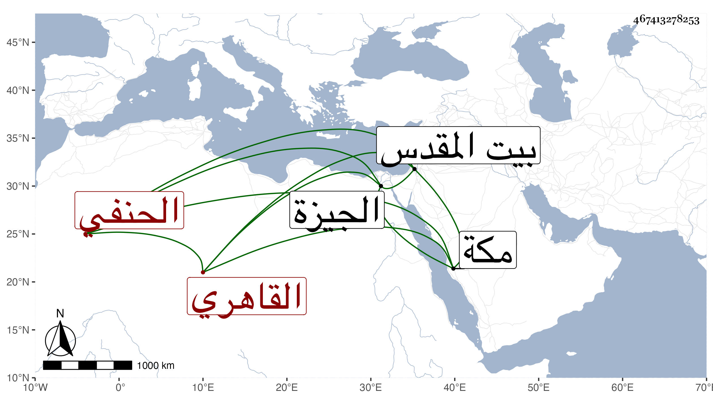

0902Sakhawi.DawLamic.ITO20230111-ara1.EIS1600.467413278253
Biography ID: 467413278253
571
علي بن أحمد بن خليل النور القاهري الحنفي نزيل الحسنية وفقيه الأيتام بها ويعرف لذلك بالحسني وكذا يعرف بابن عين الغزال ممن اشتغل عند الزين قاسم ونظام وشارك في الفضائل وصحب ابن أخت مدين وتسلك به ولازم الذكر وانضم إليه جماعة واختص بعبد الرحيم الأبناسي وتردد إليه الخطيب الوزيري ، واستقر في مدرسة مشيخة الخروبية بالجيزة شريكا لغيره وجاور غير مرة وقرره السلطان في مشيخة رباطه بمكة فأقام بها قليلا واجتمع على هناك في موسم سنة اثنتين وتسعين ثم رجع فيه بعد استخلافه الشهاب أحمد ابن شيخه وزار بيت المقدس و ...
